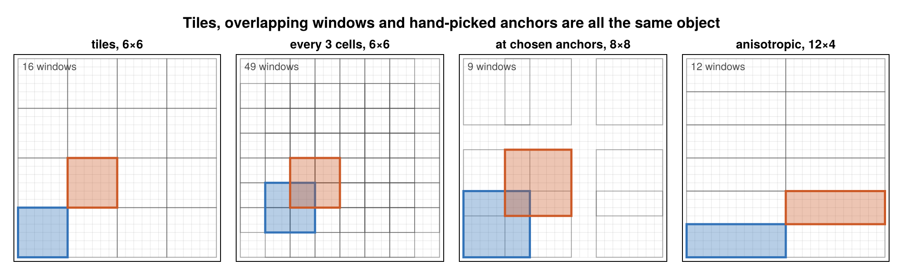

Windows
A window is where a statistic is computed. Everything in this package — a tile, a sliding window, a set of windows at hand-picked anchors — is the same object, which is what lets one planner span all of them.

One axis at a time
An AxisWindow is size cells at a set of positions along an axis of extent cells. Origins are 0-based offsets, so the window at origin o covers 1-based indices o+1 : o+size.
Positions come in two forms:
Progression(offset, stride, count)— an arithmetic progression. Tiles are thestride == sizecase; sliding windows arestride < size;stride == 1is dense.Origins(v)— an explicit sorted list, for windows at anchors that follow no pattern.
An N-dimensional Window is a tuple of one AxisWindow per axis, so anisotropy is free: 4 cells along one axis and 32 along another is just two different AxisWindows.
Edges
An extent rarely divides by a window size. Four policies say what to do about the remainder:
| Policy | Behaviour |
|---|---|
Truncate() | keep only whole windows; the tail is dropped (default) |
Partial() | keep the trailing window, clipped, carrying its true smaller count |
Centered() | like Truncate, with the remainder split evenly between both ends |
Strict() | error unless the windows cover the axis exactly |
Padding is deliberately not offered: it would fabricate observations.
Partial is the one to reach for when nothing may be dropped. The counts on a clipped window are real — a mean over a partial tile divides by the cells actually there — so partial windows merge correctly with whole ones. A Partial request on an extent that happens to divide gives exactly the same windows, counts and plan as Truncate.
Deriving one window from another
Three relations decide what the planner is allowed to do, and each is a pure predicate with an exhaustively tested definition:
can_coarsen(parent, child)— every child window iskconsecutive windows of a tiled parent.can_compose(a, b, child)— every child window is theawindow at its origin followed by thebwindow at origin +a.size.can_restride(parent, child)— the child selects a subset of the parent's windows: a view, free.
These are the whole legality story. Kernels only ever evaluate merges the predicates have proven aligned, and the tests check every true case against brute-force sets of covered indices on small extents.
Where the output cells sit
geometry(r, key) reports it:
g = geometry(r, (8, 8))
g.origins # 0-based origins per axis
g.ranges # the input index range each output cell covers
g.bounds # physical (low, high) per output cell, when a spacing is known
g.centers # physical centresThat is the answer to "which cells went into this number", including under Truncate, where the dropped tail differs per size.